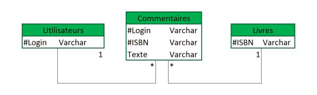

Cassandra:
Modélisation et création de base de données
Objectifs
Apprendre à modéliser un problème
pour l'implémenter dans une base de donnée Cassandra.
Apprendre les fonctions de base
(insert, update, delete).
Présentation
de Cassandra
Architecture
de Cassandra
Modèle
de données
Le
langage CQL
Modélisation
rime avec dénormalisation
Exercice
Présentation de Cassandra
Cassandra est une base de données NOSQL (Not
Only SQL) orientée colonne.
Origine de Cassandra
Cassandra est développé par Facebook en
2007 la messagerie interne. En 2008, le projet est cédé à la
fondation Apache et devient "top-level-project" à partir
de 2010. Cassandra est alors enrichie et de nouvelles
fonctionnalités y sont ajoutées.
Cassandra est un projet open source.
Cassandra est, entre autre, utilisée par
Twitter, NetFlix ou Cisco WebEx.
Remarque : Les concepts de Cassandra
Cassandra reprend les concepts de 2 bases de
données existantes :
BigTable, créé par Google, pour son
modèle de données orienté colonne et son mécanisme de
persistance sur disque
Dynamo, créé par Amazon, pour son
architecture distribuée sans noeud maître.
Avantages / Inconvénients
Avantages :
Inconvénients :
Lenteur
Pas d'interface graphique
Difficultés à l'utilisation
Limitation de la taille des données
Architecture de Cassandra
Définition : Cluster
Un cluster est un regroupement de plusieurs
noeuds (serveur physique) qui communiquent entre eux pour la gestion
de données.
Fondamental :
Cassandra est une base de donnée contenue dans
un cluster.
Comme de nombreuse base NoSQL, les données sont
réparties sur plusieurs nœuds et peuvent être répliquée sur 1 à
N nœuds.
Un utilisateur peut se connecter sur n'importe
quel nœud et accéder à l'ensemble des données.
Modèle de données
Définition : Colonne
La colonne est la plus petite unité de donnée
de Cassandra. Elle est constituée du triplet :
Nom
Valeur : Maximum 2G. Elle n'est pas
obligatoire.
Timestamp : Sauvegarde la mise à
jour la plus récente.

Colonne
Exemple
de colonne
Remarque :
Une colonne dans cassandra n'a pas le même sens
que dans un SGBDR. Il s'agit là d'un attribut d'un enregistrement.
Définition : Ligne
Une ligne est un ensemble de colonnes (jusqu'à 2
Milliards). Elle est identifiée par une clé.
C'est l'équivalent d'une ligne dans un SGBDR,
c'est donc un enregistrement.
Ligne
Exemple
de ligne
Remarque : La notion de clé dans Cassandra
La clé d'une ligne peut être rapprochée aux
OID des SGBD RO. C'est grâce à elle que l'enregistrement est
trouvé.
Les données étant réparties sur différent
noeuds, il faut pouvoir la récupérer rapidement. Elle est codé
sur 128bits et généralement représentée sous la forme de groupes
de caractères hexadécimaux en minuscule séparés par des tirets.
Cette clé d'enregistrement est de type uuid (Universal Unique
IDentifier).
Il est possible de définir des clés primaires
similaires aux SGBDR. Dans ce cas, la première colonne de la clé
sera utilisé comme clé d'enregistrement (et convertit). Les
suivantes ne serviront qu'à s'assurer que l'enregistrement est
unique.
Définition : Column Family
Une Column Family est un regroupement de lignes.
Column
family

Exemple de column family
Remarque :
Une Column Family est l'équivalent d'une Table
dans un SGBDR.
On peut d'ailleurs y ajouter des "métadonnées",
en quelque sorte des "entêtes" de colonnes. Néanmoins,
les colonnes définies ne seront pas forcément exploités lors de
la création de ligne.
Il existe deux types de familles de colonnes
statique : les colonnes sont définies
lors de la création ou modification de la famille de colonnes ;
dynamique : les colonnes sont définies
lors de la création ou modification d'une ligne.
Définition : Keyspace
Un KeySpace est un regroupement de Column Family.
Il équivaut au schéma dans un SGBDR.

Keyspace
Le langage CQL
Syntaxe : Create keyspace
CREATE KEYSPACE <keyspace_name> WITH
REPLICATION = { 'class' : '<class de la strategie>',
'replication_factor' : <nb réplication> };
class : Strétagie de gestion des
uuid
replication_factor : Nombre de noeuds
sur lesquels les données doivent être répliquées.
Exemple :
CREATE KEYSPACE test WITH REPLICATION = { 'class'
: 'SimpleStrategy', 'replication_factor' : 1 };
Syntaxe : Se positionner dans un keyspace
USE <keyspace_name> ;
Exemple :
USE test ;
Syntaxe : Supprimer un keyspace
DROP KEYSPACE <keyspace_name> ;
Exemple :
DROP KEYSPACE test ;
Syntaxe : Création d'une column family avec une
clé primaire naturelle
CREATE TABLE <table> {
champs1 type,
champs2 type,
....
PRIMARY KEY(champs1)
} ;
Exemple :
CREATE TABLE livre (
isbn varchar,
titre varchar,
PRIMARY KEY(isbn));
Syntaxe : Création d'une column family avec une
clé primaire artificielle
CREATE TABLE <table> {
id uuid,
champs2 type,
....
PRIMARY KEY(id)
} ;
Exemple :
CREATE TABLE livre (
id uuid,
isbn varchar,
titre varchar,
PRIMARY KEY(id));
Syntaxe : Ajouter une colonne
ALTER TABLE <table> ADD <column type> ;
Exemple :
ALTER TABLE livre ADD auteur VARCHAR ;
Syntaxe : Supprimer une colonne
ALTER TABLE <table> DROP <column type> ;
Exemple :
ALTER TABLE livre DROP auteur VARCHAR ;
Syntaxe : Supprimer une column family
DROP COLUMNFAMILY <table> ;
Exemple :
DROP COLUMNFAMILY livre ;
Syntaxe : Inserer une ligne
INSERT INTO <table>(<colonnes....>)
VALUES (<Valeurs...>);
Attention :
La clé primaire doit obligatoirement être
insérée
Exemple : Insertion avec une clé primaire
naturelle
INSERT INTO livre (isbn, titre) VALUES
('12548-5698', 'Le joueur d'échec');
Exemple : Insertion avec une clé primaire
composite
INSERT INTO livre (id, isbn, titre) VALUES
(uuid(), '12548-5698', 'Le joueur d'échec') ;
On peut aussi utiliser des timeuuid, dont le
calcul est basé sur l'heure.
INSERT INTO livre (id, isbn, titre) VALUES
(now(), '12548-5698', 'Le joueur d'échec');
Attention :
Les opérations de delete et update doivent être
faites grâce à la clé primaire.
Syntaxe : Supprimer une ligne
DELETE FROM Persons WHERE <key> = <value>;
Exemple :
DELETE FROM livre WHERE isbn = '1258-5874';
Syntaxe : Modifier une ligne
UPDATE livre SET titre = 'Le rouge et le noir'
WHERE <key> = <value>;
Exemple :
UPDATE livre SET titre = 'Le rouge et le noir'
WHERE isbn = '1258-5874';
Syntaxe : Effectuer une requete
SELECT <key_column> FROM <table>;
Attention :
L'opération SELECT ne s'effectue que sur les
colonnes clés, ou bien sur les colonnes indexées.
Modélisation rime avec dénormalisation
Remarque :
Étant donné que Cassandra est contenue dans un
cluster, les jointures n'existent pas. Il faut donc dénormaliser le
modèle.
Méthode : Relation one to many
Voici une relation one to many (un à plusieurs)
dans un modèle normalisé.
Les jointures n'étant pas possible, on
dénormalise la relation.
Méthode
: Relation many to many
Voici un exemple de ralation many to many
(plusieurs à plusieurs). Un utilisateurs peux commenter plusieurs
livre, et un livre peut être commenté par plusieurs utilisateurs.
Le but est de pouvoir retrouver tous les
commentaires d'un utilisateur et tous les commentaires d'un livre.

On est donc obligé de dénormaliser et de faire
deux tables.
Exercice
Gérer des ventes
On souhaite formaliser le modèle d'un site de
partage de vidéo nommé CassTube, les utilisateurs possèdent un
login unique, ainsi que leur nom et leur prenom. Les vidéos
possèdent un id, un nom et une description. Un utilisateur possède
plusieurs vidéos, et les vidéos possèdent des commentaires de
plusieurs utilisateurs.
Nous souhaitons rechercher une liste des vidéos,
ainsi que les vidéos par utilisateur. Enfin, nous chercherons aussi
à récupérer les commentaires d'une vidéo ou les commentaires
d'un utilisateurs
Question 1
Proposer une modélisation normalisée.
Question 2
Proposer maintenant la modélisation pour
Cassandra.
Lancer la console CQL.
Sous Windows, pour pouvoir faire des copier
coller, lancer la console via l'invite de commande.
Question 3
Créer un keyspace ai07
Question 4
Créer les column family nécessaire.
Pour faciliter les exercices suivant, nous allons
aussi créer une table user qui ne contiendra que le login, nom et
prénom des utilisateurs créés.
Question 5
insérer les videos suivantes et vérifier que
l'insertion est correcte.
id (example) - video_name - video_uploaded -
login
1 - KeyboardCat - now - cschmidt (Chris Schmidt)
2 - NyanCat - now - saraj00n (Sarah June)
Ajouter ensuite l'utilisateur suivant (sans
vidéo) : MasterTroll (Jean Fabrice)
Vérifier l'insertion dans la table vidéo, puis
recherchez les vidéos de l'utilisateur 'saraj00n'.
Question 6
Insérer le commentaires suivants :
1 - le 15/01/2017 à 12h00, saraj00n a écrit
'first' sur la vidéo 'Keyboard Cat'
2 - le 15/01/2017 à 12h05, MasterTroll a écrit
'thats lame' sur la vidéo 'Keyboard Cat'
Question 7
Insérer cet utilisateur :
INSERT INTO users (client_id , nom, prenom , age)
VALUES ('saraj00n', 'Sarah', 'Junior');
Que se passe-t-il ?
Question 8
L'utilisateur MasterTroll décide de dévoiler
son identité au grand jour, il change son nom pour PAUL
Question 9
L'utilisateur Jean PAUL se fait banir, supprimer
l'utilisateur
Question 10
Supprimez la column family users.
Question 11
Supprimer le keyspace.
Solution
de l'Exercice
Sources